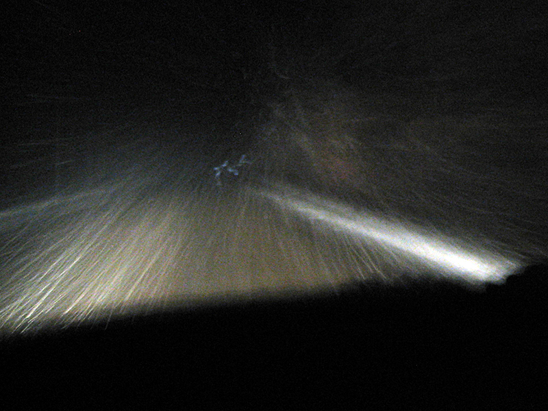

blizzard + beer run = ?
Well we finally got the first bona fide snowfall of winter. This means at least 2 things (offhand): #1 any spiders seen in the house now will not be sent outside until next spring. #2 There's a chance it could arrive in blizzard form! And that's exactly what happened...
The day started out quietly enough. But by the mid-afternoon the snowflakes started comin'. Then, at around 9 p.m., after band practice and cooking some eggs, i ate a special chocolate chip cookie :) About a half-hour later, I fished out my window scraper, mittens, and cotton hat, and started warming up the car...
Sitting in the driveway, just prior to leaving, the amount of snowfall didn't seem too heavy. Yet once I got on the county road, the flakes were coming down in pretty spectacular fashion...

It *was* pretty mesmerizing (for example), especially "with" the cookie.... It was also unnerving, as you really had to ignore the spectacle of dazzling snowflakes hitting the windshield and focus on the fairly narrow county road. It was also slow going, though at least there were no other cars on the road. However, all this changed as I approached Cty. Rd. 141.
Because by then, I'd seen the distant lights of other cars, which shone ominously off in the unknown distance.... In addition, quite frankly, I was getting a bit confused by the roads and overall logistics of things :p And there were some tricky curvy roads ahead. So, I decided to turn around. I felt somewhat sheepish, but was sure glad to pull into the driveway when I did.
So to answer the equation above = no unnecessary heroics! And possibly an interesting blog entry.